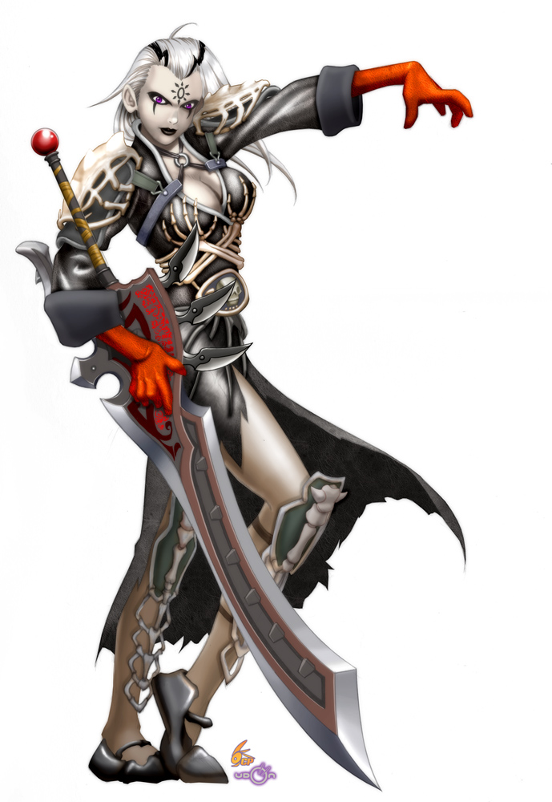

| Kitara Melumbra | Level 17 | Abilities | Skills | Equipment (113 lbs.) | |
|---|---|---|---|---|---|
|  |
Defenses
|
Other
|
|
|
|
Supremely Vicious Bastard Sword +2: automatic hit, 5 lightning damage
You stab your opponent, and an arc of lightning leaps from your hand to encircle a foe in a crackling ring.
At-Will (Special) • Arcane, Bladespell, Lightning
No Action Ranged 10
Trigger: During your turn, you hit an enemy with a melee basic attack using a one-handed weapon while your other hand holds no weapon or shield.
Target: One creature
Effect: Dexterity modifier (+5) lightning damage, and the first time the target moves before the end of your next turn, it takes the lightning damage again.
Level 11: 2 + Dexterity modifier (+5) lightning damage.
Level 21: 4 + Dexterity modifier (+5) lightning damage.
Special: You can use only one bladespell power per triggering attack.
Published in Neverwinter Campaign Setting, page(s) 72.
Supremely Vicious Bastard Sword +2: automatic hit, 5 necrotic damage
Your attack slices away your enemy's shadow, sending it flitting across the field to pull at the feet of a foe.
At-Will (Special) • Arcane, Bladespell, Necrotic
No Action Ranged 10
Trigger: During your turn, you hit an enemy with a melee basic attack using a one-handed weapon while your other hand holds no weapon or shield.
Target: One creature
Effect: Dexterity modifier (+5) necrotic damage, and the target falls prone if it is the same size as or smaller than the target of the triggering attack.
Level 11: 2 + Dexterity modifier (+5) necrotic damage.
Level 21: 4 + Dexterity modifier (+5) necrotic damage.
Special: You can use only one bladespell power per triggering attack.
Published in Neverwinter Campaign Setting, page(s) 72.
Supremely Vicious Bastard Sword +2: automatic hit, 5 force damage
You level a crushing blow against your foe, and an unseen force grasps an enemy and drags it about the field of battle.
At-Will (Special) • Arcane, Bladespell, Force
No Action Ranged 10
Trigger: During your turn, you hit an enemy with a melee basic attack using a one-handed weapon while your other hand holds no weapon or shield.
Target: One creature
Effect: Dexterity modifier (+6) force damage, and you slide the target up to 3 squares.
Level 11: 2 + Dexterity modifier (+6) force damage.
Level 21: 4 + Dexterity modifier (+6) force damage.
Special: You can use only one bladespell power per triggering attack.
Published in Neverwinter Campaign Setting, page(s) 72.
Orb of Enduring Magic +3: automatic hit, 3+7 force damage
Supremely Vicious Bastard Sword +2: automatic hit, 3+7 force damage
A glowing blue bolt of magical energy hurtles from your finger and unerringly strikes your target.
At-Will • Arcane, Evocation, Force, Implement
Standard Action Ranged 20
Target: One creature
Effect: 2 + Intelligence modifier (+7) force damage.
Level 11: 3 + Intelligence modifier (+7) force damage.
Level 21: 5 + Intelligence modifier (+7) force damage.
Special: If the implement used with this power has an enhancement bonus, add that bonus to the damage. In addition, you can use this power as a ranged basic attack.
Published in Player's Handbook, page(s) 159, Heroes of the Fallen Lands, page(s) 203, Neverwinter Campaign Setting, page(s) 74, Class Compendium.
Additional Effects
Reaper's Touch: You can use this power as a melee basic attack.
White Lotus Riposte: When an enemy attacks you before the start of your next turn after you hit it with this attack power, it takes 7 force damage
White Lotus Master Riposte: When an enemy attacks you before the start of your next turn after you hit it with this attack power, repeat the attack as an immediate reaction
You create a small amount of stone and rubble that clogs up the area.
At-Will • Arcane
Minor Action Ranged 5
Effect: One square in range becomes difficult terrain until the end of the encounter. You can end this effect as a minor action.
Special: You cannot have more squares than your Intelligence modifier (+6) under this effect at one time.
Published in Dragon Magazine 383, page(s) 52.
You perform an amusing magical trick, such as creating a dancing wisp of light, freshening a wilting flower, making a coin invisible, or warming a cold drink.
At-Will • Arcane
Standard Action Ranged 2
Effect: Use this cantrip to accomplish one of the effects given below:
• Change the color of items in 1 cubic foot.
• Create a harmless sensory effect, such as a shower of sparks, a puff of wind, faint music, or a strong odor.
• Clean or soil items in 1 cubic foot.
• Instantly light (or snuff out) a candle, a torch, or a small campfire.
• Chill, warm, or flavor up to 1 pound of nonliving material for up to 1 hour.
• Make a small mark or symbol appear on a surface for up to 1 hour.
• Produce out of nothingness a small item or image that exists until the end of your next turn.
• Make a small, handheld item invisible until the end of your next turn.
Special: You can have as many as three prestidigitation effects active at one time. Nothing you create with this cantrip can deal damage, serve as a weapon or a tool, or hinder another creature’s actions. This cantrip cannot duplicate the effect of any other power.
Published in Player's Handbook, page(s) 159, Heroes of the Fallen Lands, page(s) 202, Neverwinter Campaign Setting, page(s) 73, Class Compendium.
You gesture toward an object nearby, and a spectral floating hand lifts the object into the air and moves it where you wish.
At-Will • Arcane, Conjuration
Minor Action Ranged 5
Effect: You conjure a spectral, floating hand in an unoccupied square within range. The hand lasts until the end of your next turn or until you use this power again. If you are holding an object when you use this power, the hand can move the object into a pack, a pouch, a sheath, or a similar container and simultaneously move any one object carried or worn anywhere on your body into your hand. While the hand persists, you can take the following actions.
Minor Action: The hand picks up or manipulates an object weighing 20 pounds or less. It can hold only one object at a time.
Move Action: The hand moves up to 5 squares in any direction, carrying the object it holds.
Free Action: The hand drops the object it is holding.
Sustain Minor: The hand persists until the end of your next turn.
Published in Player's Handbook, page(s) 158, Heroes of the Fallen Lands, page(s) 202, Neverwinter Campaign Setting, page(s) 73, Class Compendium.
With a wink, you create an illusory sound that emanates from a distant location.
At-Will • Arcane, Illusion
Standard Action Ranged 10
Target: One object or unoccupied square
Effect: You cause a sound as quiet as a whisper or as loud as a yelling or fighting creature to emanate from the target. You can produce nonvocal sounds such as the ringing of a sword blow, jingling armor, or scraping stone. If you whisper, you can whisper quietly enough that only creatures adjacent to the target can hear your words.
Published in Player's Handbook, page(s) 158, Heroes of the Fallen Lands, page(s) 201, Neverwinter Campaign Setting, page(s) 73, Class Compendium.
Action points allow creatures to take more actions than normal. Adventurers each start with 1 action point. Typically an adventurer spends an action point to pull off an extra attack, to move farther than normal, to take the second wind action in the same turn that he or she attacks, and so on.
Spend an Action Point
• Action: Free action. A creature must have an action point in order to take this action. Also, the creature can take this action only during its turn, and never during a surprise round.
• Gain an Extra Action: The creature gains an extra action to use during its current turn. The action can be a standard, a move, or a minor action. Some creatures have special abilities that trigger when they spend action points, and some have the option of gaining a benefit other than an extra action when they spend their points.
• Once per Encounter or Round: An adventurer can spend an action point only once per encounter.
• Gone When Spent: An action point is gone when spent, regardless of the success of the action taken.
Published in Player's Handbook, page(s) 286, Monster Manual 2, page(s) 6, Rules Compendium, page(s) 235.
Additional Effects
Choir of Swords: Spend an action point while bladesong is active, make melee basic attack against all adjacent enemies as a standard action.
Bladesong Ballet: Use an action point while bladesong is active to shift your speed in squares.
Unarmed: automatic hit, 2 psychic damage
Your foe feels the foreboding stare of your evil eye warning it away from you.
At-Will • Arcane, Psychic
Minor Action Ranged 5
Target: One creature you can see that isn't marked by you
Effect: The target takes 2 psychic damage whenever it hits you with an attack (a creature can take this damage only once per turn). The effect ends if you don't have line of sight to the target at the end of your turn, or if you use this power against a different target.
Level 21: 4 psychic damage.
Published in Dragon Magazine 405.
Supremely Vicious Broadsword +2: +17 vs. AC, 1d10+8 damage
You resort to the simple attack you learned when you first picked up a melee weapon.
At-Will •
Standard Action Melee weapon
Target: One creature
Keyword: Weapon
Attack: Strength vs. AC
Hit: 1[W] + Strength modifier (+3) damage.
Level 21: 2[W] + Strength modifier (+3) damage.
Additional Effects
Arcane Strike: Make a melee basic attack as a minor action when you use a bladesinger daily attack power on your turn.
Steely Retort: Use a melee basic attack as an opportunity action against adjacent enemies who hit you while bladesong is active.
Unarmed: +11 vs. AC, 1d4+6 damage
You resort to the simple attack you learned when you first picked up a ranged weapon.
At-Will •
Standard Action Ranged weapon
Target: One creature
Keyword: Weapon
Attack: Dexterity vs. AC
Hit: 1[W] + Dexterity modifier (+6) damage.
Level 21: 2[W] + Dexterity modifier (+6) damage.
Additional Effects
Orb of Enduring Magic +3: +17 vs. Reflex, 2d6+9 fire damage
Supremely Vicious Bastard Sword +2: +16 vs. Reflex, 2d6+9 fire damage
A gout of flame erupts from your hands and scorches nearby foes.
Encounter • Arcane, Evocation, Fire, Implement
Standard Action Close blast 5
Target: Each creature in the blast
Attack: Intelligence vs. Reflex
Hit: 2d6 + Intelligence modifier (+6) fire damage.
Miss: Half damage.
Published in Player's Handbook, page(s) 159, Heroes of the Fallen Lands, page(s) 206, Neverwinter Campaign Setting, page(s) 72, Class Compendium, page(s) -.
Additional Effects
+3 to damage rolls if you hit two or more creatures - Destructive Wizardry
Orb of Enduring Magic +3: +17 vs. Reflex, 1d8+ or 2d8+9 damage
Supremely Vicious Bastard Sword +2: +16 vs. Reflex, 1d8+ or 2d8 +9 damage
You call forth floating spikes of metal and stone that rapidly streak toward your foes.
Encounter • Arcane, Evocation, Implement
Standard Action Ranged 5
Target: One, two, or three creatures
Attack: Intelligence vs. Reflex
Hit: 1d8 + Intelligence modifier (+7) damage, or 2d8 + Intelligence modifier (+7) damage if you target only one creature.
Published in Dragon Magazine 383, page(s) 52.
Additional Effects
+3 to damage rolls if you hit two or more creatures - Destructive Wizardry
Orb of Enduring Magic +3: +17 vs. Reflex, 2d6+9 radiant damage
Supremely Vicious Bastard Sword +2: +16 vs. Reflex, 2d6+9 radiant damage
Radiant moonlight streams from you in all directions, and those who behold you are stricken with awe.
Encounter • Arcane, Charm, Enchantment, Implement, Radiant
Standard Action Close burst 2
Target: Each enemy in the burst
Attack: Intelligence vs. Will
Hit: 2d6 + Intelligence modifier (+6) radiant damage, and you push the target up to a number of squares equal to your Wisdom modifier.
Effect: You and each ally in the burst gain temporary hit points equal to your Wisdom modifier.
Published in Heroes of the Feywild, page(s) 92.
Additional Effects
+3 to damage rolls if you hit two or more creatures - Destructive Wizardry
Orb of Enduring Magic +3: +17 vs. Reflex, 1d6+9 force damage
Supremely Vicious Bastard Sword +2: +16 vs. Reflex, 1d6+9 force damage
Gouts of flame pulse from your orb and explode amid your enemies, setting the area alight and roasting them as they attempt to escape.
Encounter • Arcane, Evocation, Fire, Force, Implement, Zone
Standard Action Area burst 1 within 10 squares
Target: Each creature in the burst
Attack: Intelligence vs. Reflex
Hit: 1d6 + Intelligence modifier (+7) force damage, and you knock the target prone.
Effect: The burst creates a zone of licking flames that lasts until the end of your next turn. Each enemy that enters the zone or starts its turn there takes 2 fire damage. An enemy can take this damage only once per turn.
Orb of Imposition: You can extend the duration of this effect, even though it is not an at-will power. If you do so, the area expands to burst 3 and doesn't affect you or your allies.
Published in Arcane Power, page(s) 102.
Additional Effects
+3 to damage rolls if you hit two or more creatures - Destructive Wizardry
Orb of Enduring Magic +3: +17 vs. Reflex, 1d10+9 necrotic damage
Supremely Vicious Bastard Sword +2: +16 vs. Reflex, 1d10+9 necrotic damage
You point three fingers at your foe, curling them like talons. Weird green mist streams from your enemy's flesh, carrying away its strength.
Encounter • Arcane, Implement, Necromancy, Necrotic
Standard Action Ranged 10
Target: One creature
Attack: Intelligence vs. Fortitude
Hit: 1d10 + Intelligence modifier (+7) necrotic damage, and the target is weakened until the end of your next turn.
Miss: Half damage.
Published in Player's Handbook, page(s) 160, Neverwinter Campaign Setting, page(s) 73, The Book of Vile Darkness, page(s) 2-78, Class Compendium.
Orb of Enduring Magic +3: +16 vs. Reflex, 1d10+9 force damage
Supremely Vicious Bastard Sword +2: +16 vs. Reflex, 1d10+9 force damage
You hurl an orb of magical force at an enemy. It bursts against the target and throws off razor-sharp shards of force that cut nearby enemies to ribbons.
Encounter • Arcane, Evocation, Force, Implement
Standard Action Ranged 20
Primary Target: One creature or object
Attack: Intelligence vs. Reflex
Hit: 2d8 + Intelligence modifier (+7) force damage. Make a secondary attack.
Orb of Enduring Magic +3: +17 vs. Reflex, 1d10+9 force damage
Supremely Vicious Bastard Sword +2: +16 vs. Reflex, 1d10+9 force damage
Encounter • Arcane, Evocation, Force, Implement
Free Action Area burst 1 centered on the primary target
Secondary Target: Each enemy in the burst other than the primary target
Attack: Intelligence vs. Reflex
Hit: 1d10 + Intelligence modifier (+7) force damage.
Published in Class Compendium.
Additional Effects
+3 to damage rolls if you hit two or more creatures - Destructive Wizardry
Orb of Enduring Magic +3: +17 vs. Reflex, 2d8+9 necrotic damage
Supremely Vicious Bastard Sword +2: +16 vs. Reflex, 2d8+9 necrotic damage
Reaching into the Shadowfell, you cast a tangible, looming shadow that strikes fear into the living.
Encounter • Arcane, Fear, Implement, Necrotic, Nethermancy
Standard Action Close blast 3
Target: Each creature in the blast
Attack: Intelligence vs. Will
Hit: 2d8 + Intelligence modifier (+7) necrotic damage, and the target takes a -2 penalty to attack rolls until the end of your next turn.
Effect: Each target takes a -2 penalty to Will until the end of your next turn.
Published in Heroes of the Feywild, page(s) 93.
Additional Effects
+3 to damage rolls if you hit two or more creatures - Destructive Wizardry
Orb of Enduring Magic +3: +17 vs. Reflex, 1d10+9 cold damage
Supremely Vicious Bastard Sword +2: +16 vs. Reflex, 1d10+9 cold damage
You fire two bolts of brilliant blue-white energy that freeze your enemies in place for a short time.
Encounter • Arcane, Cold, Evocation, Implement
Standard Action Ranged 10
Target: One or two creatures
Attack: Intelligence vs. Reflex
Hit: 1d10 + Intelligence modifier (+7) cold damage, and the target is immobilized until the end of your next turn.
Miss: The target is slowed until the end of your next turn.
Published in Player's Handbook, page(s) 161, Class Compendium.
Additional Effects
+3 to damage rolls if you hit two or more creatures - Destructive Wizardry
A brilliant blast of flashing colors springs from your outstretched fingers, knocking nearby enemies senseless.
Encounter • Arcane, Evocation, Implement, Radiant
Standard Action Close blast 5
Target: Each creature in the blast
Attack: Intelligence vs. Will
Hit: 1d6 + Intelligence modifier (+7) radiant damage, and the target is dazed until the end of your next turn.
Published in Player's Handbook, page(s) 161, Neverwinter Campaign Setting, page(s) 75, Class Compendium.
Additional Effects
+3 to damage rolls if you hit two or more creatures - Destructive Wizardry
Orb of Enduring Magic +3: +17 vs. Reflex, 2d6+9 damage
Supremely Vicious Bastard Sword +2: +16 vs. Reflex, 2d6+9 damage
A miniature tornado roars forth to batter your enemy and lift it into the air.
Encounter • Arcane, Evocation, Implement
Standard Action Ranged 10
Target: One creature
Attack: Intelligence vs. Fortitude
Hit: 2d6 + Intelligence modifier (+7) damage, and you slide the target 10 feet (2 squares) vertically. The target remains aloft until the start of its next turn; while aloft, it is dazed and immobilized, and it grants combat advantage to you and your allies. At the start of its next turn, it lands on its feet in the space it formerly occupied or in the nearest unoccupied space of its choice.
Published in Arcane Power, page(s) 104.
Purple flame appears over your head, though only you and your companions can see it. By its guidance, you can find your way.
Encounter • Arcane, Shadow, Zone
Minor Action Close burst 2
Effect: The burst creates a zone that lasts until the end of the encounter. You and your allies have darkvision while in the zone.
Published in Heroes of Shadow, page(s) 102.
Orb of Enduring Magic +3: +17 vs. Fort, 2d6+9 necrotic damage
Supremely Vicious Bastard Sword +2: +16 vs. Fort, 2d6+9 necrotic damage
You make a slashing motion against an enemy, causing darkness to bind it and filling the air around it with a charnel stench.
Encounter • Arcane, Implement, Necromancy, Necrotic, Shadow, Zone
Standard Action Melee 1 or Ranged 5
Target: One creature
Attack: Intelligence vs. Fortitude
Hit: 2d6 + Intelligence modifier necrotic damage, and the target is immobilized until the end of your next turn. The attack creates a zone in a burst 2 centered on the target. The zone lasts for as long as the target is immobilized by this power. Any creature (except you) that ends its turn in the zone takes 5 necrotic damage, and it grants combat advantage while in the zone.
Miss: The power is not expended. If you use it during your next turn against the same target, you gain a +2 bonus to the attack roll.
Published in Heroes of Shadow, page(s) 103.
Orb of Enduring Magic +3: +17 vs. Reflex, 2d6+9 lightning damage
Supremely Vicious Bastard Sword +2: +16 vs. Reflex, 2d6+9 lightning damage
Brilliant strokes of blue-white lightning erupt from your outstretched hand.
Encounter • Arcane, Evocation, Implement, Lightning
Standard Action Ranged 10
Target: One, two, or three creatures
Attack: Intelligence vs. Reflex
Hit: 2d6 + Intelligence modifier (+7) lightning damage.
Miss: Half damage.
Published in Player's Handbook, page(s) 162, Heroes of the Fallen Lands, page(s) 215, Neverwinter Campaign Setting, page(s) 76, Class Compendium.
Additional Effects
+3 to damage rolls if you hit two or more creatures - Destructive Wizardry
Orb of Enduring Magic +3: +17 vs. Fort, 2d10+9 thunder damage
Supremely Vicious Bastard Sword +2: +16 vs. Fort, 2d10+9 thunder damage
Your foe is rocked by thunderous noise, and an ominous rumble begins at your enemy's slightest move.
Encounter • Arcane, Evocation, Implement, Thunder
Standard Action Ranged 10
Target: One creature
Attack: Intelligence vs. Fortitude
Hit: 2d10 + Intelligence modifier thunder damage. If the target leaves the space it currently occupies before the start of your next turn, it takes an extra 1d10 + Intelligence modifier thunder damage.
Published in Dragon Magazine 375, page(s) 14.
As you teleport, a shadowy afterimage manifests as tendrils that reach out to your foes.
Encounter • Shadow, Teleportation
Standard Action Personal
Effect: You teleport up to 5 squares, then make a basic attack. You teleport one target hit by the attack up to 3 squares, and it is dazed until the end of your next turn.
Published in Heroes of Shadow, page(s) 148.
You attune yourself to your foeís shadow, then step through it at a momentís notice.
Encounter • Shadow, Teleportation
Minor Action Close burst 5
Target: One creature in the burst
Effect: Until the end of your next turn, you can teleport to any square adjacent to the target as a move action. If you are already adjacent to the target, you can teleport up to 3 squares as a minor action.
Published in Heroes of Shadow, page(s) 148.
You unleash shifting streams of fire that burn down your foes while leaving allies untouched.
Encounter • Arcane, Evocation, Fire, Implement
Standard Action Close blast 5
Target: Each enemy in the blast
Attack: Intelligence vs. Reflex
Hit: 5d6 + Intelligence modifier fire damage.
Miss: Half damage.
Published in Heroes of the Fallen Lands, page(s) 226, Neverwinter Campaign Setting, page(s) 80.
Silvery missiles spring from your fingertips and streak across the battlefield, striking your enemies with a staggering impact.
Encounter • Arcane, Evocation, Force, Implement
Standard Action Ranged 20
Targets: One, two, or three creatures
Attack: Intelligence vs. Reflex. You gain a +4 power bonus to the attack roll if you target only one creature.
Hit: 3d6 + Intelligence modifier force damage, and the target is dazed until the end of your next turn.
Published in Player's Handbook, page(s) 166, Neverwinter Campaign Setting, page(s) 80, Class Compendium.
You move like a wraith between two points, your body rematerializing slowly after you arrive at your destination.
Encounter • Teleportation
Move Action Personal
Effect: You teleport 3 squares and become insubstantial until the start of your next turn.
Published in Dragon Magazine 372, page(s) 6.
Your whirling blade begins to sing through the air as you enter a state of total concentration.
Encounter • Arcane
Minor Action Personal
Requirement: You must be wielding a melee weapon in one hand and no weapon or shield in the other hand. The power's effect ends if you stop fulfilling this requirement.
Effect: Until the end of your next turn, you gain a +2 power bonus to attack rolls and all defenses, and a +5 power bonus to damage rolls.
Level 17: +10 power bonus to damage rolls.
Level 27: +15 power bonus to damage rolls.
Published in Neverwinter Campaign Setting, page(s) 70.
Orb of Enduring Magic +3: +17 vs. Fort, polymorph
Supremely Vicious Bastard Sword +2: +16 vs. Fort, polymorph
A billowing cloud of greenish fog surrounds your foe. When the fog dissipates, your enemy is gone, and an ugly toad stands in its place.
Daily • Arcane, Implement, Polymorph, Transmutation
Standard Action Ranged 10
Target: One creature
Attack: Intelligence vs. Fortitude
Hit: The target turns into a Tiny toad (save ends).
Miss: The target turns into a Tiny toad until the end of its next turn.
Effect: As a toad, the target is dazed, and the only actions it can take are to move its speed or shift. All of the target's equipment transforms with it. If it takes damage from any source, this effect ends.
Published in Red Box Starter Set.
Orb of Enduring Magic +3: +17 vs. Reflex, 3d8+9 fire damage
Supremely Vicious Bastard Sword +2: +16 vs. Reflex, 3d8+9 firedamage
You weave a fiery pillar that spins like a top. With each revolution, it douses your enemies with searing heat.
Daily • Arcane, Evocation, Fire, Implement, Zone
Standard Action Area burst 1 within 10 squares
Target: Each enemy in the burst
Attack: Intelligence vs. Reflex
Hit: 3d8 + Intelligence modifier (+7) fire damage.
Miss: Half damage.
Effect: The burst creates a zone that lasts until the end of the encounter. Any enemy that enters the zone or ends its turn there takes 5 fire damage. An enemy can take this damage only once per turn.
Published in Heroes of the Fallen Lands, page(s) 207.
Additional Effects
+3 to damage rolls if you hit two or more creatures - Destructive Wizardry
Orb of Enduring Magic +3: +17 vs. Reflex, 2d6+9 psychic damage
Supremely Vicious Bastard Sword +2: +16 vs. Reflex, 2d6+9 psychic damage
Your enemies shriek in terror as, at least in their mind's eye, a bottomless pit opens beneath their feet.
Daily • Arcane, Illusion, Implement, Psychic, Zone
Standard Action Area burst 1 within 10 squares
Target: Each enemy in the burst
Attack: Intelligence vs. Will
Hit: 2d6 + Intelligence modifier (+7) psychic damage, and the target falls prone. The target is immobilized until the end of its next turn.
Miss: Half damage, and the target falls prone.
Effect: The burst creates a zone that lasts until the end of the encounter. Any enemy that enters the zone falls prone.
Published in Arcane Power, page(s) 103, Heroes of the Fallen Lands, page(s) 208.
Additional Effects
+3 to damage rolls if you hit two or more creatures - Destructive Wizardry
Orb of Enduring Magic +3: +17 vs. Reflex, 3d6+9 thunder damage
Supremely Vicious Bastard Sword +2: +16 vs. Reflex, 3d6+9 thunder damage
Elemental thunder creatures tumble through your foes and knock them about.
Daily • Arcane, Conjuration, Evocation, Implement, Thunder
Standard Action Ranged 10
Target: One or two creatures
Attack: Intelligence vs. Reflex
Hit: 3d6 + Intelligence modifier (+7) thunder damage, and you slide the primary target 3 squares.
Miss: Half damage, and you slide the primary target 1 square.
Effect: You conjure a thunderball in 1 square within each primary target's space. Each thunderball lasts until the end of your next turn. Each thunderball can make a secondary attack.
Additional Effects
+3 to damage rolls if you hit two or more creatures - Destructive Wizardry
Orb of Enduring Magic +3: +17 vs. Reflex, 5 thunder damage
Supremely Vicious Bastard Sword +2: +16 vs. Reflex, 5 thunder damage
Opportunity Action: Melee 1
Trigger: A creature moves out of the thunderball's square.
Secondary Target: The triggering creature
Secondary Attack: Intelligence vs. Reflex
Hit: 5 thunder damage.
Sustain Minor: Each thunderball persists.
Published in Arcane Power, page(s) 103.
Orb of Enduring Magic +3: +17 vs. Reflex, 2d8+9 acid damage
Supremely Vicious Bastard Sword +2: +16 vs. Reflex, 2d8+9 acid damage
You call out an arcane word and fire an arrow of green, glowing liquid that bursts against your foe and sends out a spray of sizzling acid.
Daily • Acid, Arcane, Evocation, Implement
Standard Action Ranged 20
Primary Target: One creature
Attack: Intelligence vs. Reflex
Hit: 2d8 + Intelligence modifier (+7) acid damage, and ongoing 5 acid damage (save ends).
Miss: Half damage, and ongoing 2 acid damage (save ends).
Effect: Make the secondary attack.
Orb of Enduring Magic +3: +17 vs. Reflex, 1d8+9 acid damage
Supremely Vicious Bastard Sword +2: +16 vs. Reflex, 1d8+9 acid damage
Daily • Acid, Arcane, Evocation, Implement
Free Action Area burst 1 centered on the primary target
Secondary Target: Each creature in the burst other than the primary target
Attack: Intelligence vs. Reflex
Hit: 1d8 + Intelligence modifier (+7) acid damage, and ongoing 5 acid damage (save ends).
Published in Class Compendium.
Additional Effects
+3 to damage rolls if you hit two or more creatures - Destructive Wizardry
You begin to fling force bolts with a flick of your wrist.
Daily • Arcane, Force, Implement
Minor Action
Prerequisite: You must know the magic missile at-will wizard power.
Effect: Until the end of the encounter, as a minor action once per turn, you can cast magic missile.
Published in Dragon Magazine 374, page(s) 22.
You or a creature you choose falls gently, like a feather.
Daily • Arcane
Free Action Ranged 10
Trigger: You fall, or a creature within 10 squares of you falls.
Target: The triggering creature
Effect: The target takes no damage from the fall, and consequently does not fall prone at the end of it.
Published in Player's Handbook, page(s) 160, Neverwinter Campaign Setting, page(s) 74, Class Compendium.
A creature you choose vanishes from sight.
Daily • Arcane, Illusion
Standard Action Ranged 5
Target: You or one creature
Effect: The target becomes invisible until the end of your next turn. If the target makes an attack, the invisibility ends.
Sustain Standard: If the target is within 5 squares of you, the invisibility persists until the end of your next turn.
Published in Player's Handbook, page(s) 162, Heroes of the Fallen Lands, page(s) 214, Neverwinter Campaign Setting, page(s) 76, Class Compendium.
You take a deep breath and picture the pages of your spellbook in your mind.
Daily • Arcane
Minor Action Personal
Effect: You can replace an unexpended wizard utility or daily power with another power of the same level that is in your spellbook. You gain a +1 power bonus to attack rolls with that power until the end of your next turn.
Published in PH Heroes: Series 2.
You weave a circle of protective runes that guard your allies and can draw power from your familiar for greater strength.
Daily • Arcane, Implement, Zone
Standard Action Area burst 1 within 20 squares
Effect: The burst becomes a zone of protection until the end of your next turn. You and allies gain resist to all damage equal to your Intelligence modifier while in the zone. Enemies must spend 2 extra squares of movement to enter the zone. You make an attack.
Target: Each enemy in the burst
Attack: Intelligence vs. Fortitude
Arcane Familiar: Add a +4 power bonus to the attack roll if your familiar is in the burst.
Hit: Push the target from the burst's origin square to a space outside the zone. You cannot push the target when doing so causes the target to take damage or make a saving throw.
Sustain Minor: The effect persists.
Published in Dragon Magazine 382, page(s) 27.
You wrap arcane strands about yourself and all your allies, insulating all against a particular type of damage.
Daily • Arcane
Minor Action Close burst 10
Target: You and each ally in the burst
Effect: Choose acid, cold, fire, force, lightning, necrotic, poison, psychic, radiant, or thunder. Until the end of the encounter, each target gains resistance to that damage type equal to 5 + your Intelligence modifier (+7).
Published in Arcane Power, page(s) 107, Heroes of the Fallen Lands, page(s) 219.
Orb of Enduring Magic +3: +17 vs. Reflex, 4d6+9 fire damage
Supremely Vicious Bastard Sword +2: +16 vs. Reflex, 4d6+9 fire damage
A globe of orange flame coalesces in your hand. You hurl it at your enemies, and it explodes on impact.
Daily Arcane, Evocation, Fire, Implement
Standard Action Area burst 3 within 20 squares
Target: Each creature in the burst
Attack: Intelligence vs. Reflex
Hit: 4d6 + Intelligence modifier (+7) fire damage.
Miss: Half damage.
Published in Player's Handbook, page(s) 161, Heroes of the Fallen Lands, page(s) 212, Class Compendium.
Additional Effects
+3 to damage rolls if you hit two or more creatures - Destructive Wizardry
Orb of Enduring Magic +3: +17 vs. Reflex, 1d10+9 necrotic damage
Supremely Vicious Bastard Sword +2: +16 vs. Reflex, 1d10+9 necrotic damage
Skeletal hands burst from the earth and ghostly claws swirl from the air to snatch at your foes.
Daily Arcane, Implement, Necromancy, Necrotic, Zone
Standard Action Area burst 2 within 20 squares
Target: Each enemy in the burst
Attack: Intelligence vs. Reflex
Hit: 1d10 + Intelligence modifier (+7) necrotic damage, and the target is dazed until the end of your next turn.
Miss: 1d10 + Intelligence modifier (+7) necrotic damage.
Effect: The burst creates a zone that lasts until the end of the encounter. An enemy that enters the zone or that starts its turn in the zone takes 5 necrotic damage. An enemy can take this damage only once per turn.
Published in Dragon Magazine 372, page(s) 24.
Additional Effects
+3 to damage rolls if you hit two or more creatures - Destructive Wizardry
Orb of Enduring Magic +3: +17 vs. Fort, slide 2
Supremely Vicious Bastard Sword +2: +16 vs. Fort, slide 2
Mystical forces draw your foes together as they are struck by a blast of lightning.
Daily Arcane, Evocation, Implement, Lightning
Standard Action Area burst 3 within 10 squares
Target: Each creature in the burst
Attack: Intelligence vs. Fortitude
Hit: You slide the target 2 squares.
Effect: Make a secondary attack.
Orb of Enduring Magic +3: +17 vs. Reflex, 2d8+9 lightning damage
Supremely Vicious Bastard Sword +2: +16 vs. Reflex, 2d8+9 lightning damage
Secondary Target: One enemy in the burst and each creature adjacent to that enemy
Secondary Attack: Intelligence vs. Reflex
Hit: 2d8 + Intelligence modifier (+7) lightning damage.
Miss: Half damage.
Published in Dragon Magazine 383, page(s) 53.
Additional Effects
+3 to damage rolls if you hit two or more creatures - Destructive Wizardry
Orb of Enduring Magic +3: +17 vs. Will
Supremely Vicious Bastard Sword +2: +16 vs. Will
Your foes are beset by tormenting images that dart among them, daring them to attack and driving them to lash out with reckless abandon.
Daily• Arcane, Illusion, Implement
Standard Action Area burst 1 within 10 squares
Target: Each creature in the burst
Attack: Intelligence vs. Will
Hit: The target makes a melee basic attack roll against a creature of your choice, including itself.
Effect: The target takes 5 damage each time it misses with a melee attack (save ends).
Published in Arcane Power, page(s) 107.
Orb of Enduring Magic +3: +17 vs. Will
Supremely Vicious Bastard Sword +2: +16 vs. Will
Your magic unleashes an echoing song of the Feywild, corrupting your enemies in body and mind even as it grants your allies a burst of battle frenzy.
Daily Arcane, Enchantment, Implement
Standard Action Area burst 2 within 20 squares
Target: Each enemy in the burst
Attack: Intelligence vs. Will
Hit: The target is dazed and immobilized (save ends both).
Miss: The target is dazed until the end of its next turn.
Effect: Each ally in the burst can shift up to 4 squares as a free action and gains a +4 power bonus to damage rolls until the end of your next turn.
Published in Heroes of the Fallen Lands, page(s) 217.
Orb of Enduring Magic +3: +17 vs. Fort
Supremely Vicious Bastard Sword +2: +16 vs. Fort
You wave your hand and snuff out the lives of your enemies.
Daily• Arcane, Implement, Necromancy, Necrotic, Shadow
Standard Action Area burst 2 within 10 squares
Target: Each creature in the burst
Attack: Intelligence vs. Fortitude
Hit: The target takes necrotic damage equal to your level. It is also dazed, slowed, and weakened (save ends all).
Miss: Half damage, and the target is slowed until the end of your next turn.
Published in Heroes of Shadow, page(s) 104.
You leap into the air and are borne aloft on wings of magic.
Daily• Arcane
Standard Action Personal
Effect: You gain a fly speed of 8 until the end of your next turn. When the fly speed ends, you float to the ground without taking falling damage.
Sustain Minor: The fly speed persists until the end of your next turn.
Published in Player's Handbook, page(s) 165, Heroes of the Fallen Lands, page(s) 225, Neverwinter Campaign Setting, page(s) 79, Class Compendium.
With an arcane word and a sprinkle of diamond dust, you imbue yourself or an ally with skin as hard as granite.
Daily• Arcane, Transmutation
Standard Action Melee touch
Target: You or one ally
Effect: The target gains resist 10 to all damage until the end of the encounter.
Published in Player's Handbook, page(s) 166, Neverwinter Campaign Setting, page(s) 79, Class Compendium.
This item appears to be a simple sack of brown canvas.
Wondrous Item 1,000 gp
This bag can hold up to 200 pounds in weight or 20 cubic feet in volume, but it always weighs only 1 pound.
Drawing an item from the bag is a minor action.
Published in Player's Handbook, page(s) 253, Dungeon Master's Kit, page(s) 269.
These enchanted boots increase your speed if you wear light armor or no armor.
Feet Slot 4,200 gp
You gain a +1 item bonus to speed when wearing light or no armor.
Published in Player's Handbook, page(s) 246, Heroes of the Fallen Lands, page(s) 349, Heroes of the Forgotten Kingdoms, page(s) 350.
Darkness swells around this menacing onyx skull.
Wondrous Item 4,200 gp
As a minor action, you cause all active light sources within 10 squares of you to be suppressed until the end of the encounter. Light sources activated after you use this power function normally.
Published in Adventurer's Vault, page(s) 169.
This scarlet crystal lets you move across the battlefield at the speed of thought to avoid your foes' attacks.
| Lvl 3 | +1 | 680 gp | Lvl 18 | +4 | 85,000 gp | |
| Lvl 8 | +2 | 3,400 gp | Lvl 23 | +5 | 425,000 gp | |
| Lvl 13 | +3 | 17,000 gp | Lvl 28 | +6 | 2,125,000 gp |
Implement: Orb
Enhancement Bonus: attack rolls and damage rolls
Critical: +1d6 psychic damage per plus
You gain an item bonus to initiative checks equal to the enhancement bonus of this orb.
You shift a number of squares equal to your Intelligence modifier.
Augment 1: You regain the use of this power.
Published in Player's Handbook 3, page(s) 207.
You feel hale and hearty while wearing this wide belt.
| Lvl 8 | 3,400 gp | Lvl 28 | 2,125,000 gp | |||
| Lvl 18 | 85,000 gp |
Waist Slot
Gain a +1 bonus to Fortitude defense.
Level 18: Gain a +2 bonus to Fortitude defense
Level 28: Gain a +3 bonus to Fortitude defense
Published in Adventurer's Vault, page(s) 164.
You fade from view even as the noise of your footfalls recedes.
| Lvl 5 | +1 | 1,000 gp | Lvl 20 | +4 | 125,000 gp | |
| Lvl 10 | +2 | 5,000 gp | Lvl 25 | +5 | 625,000 gp | |
| Lvl 15 | +3 | 25,000 gp | Lvl 30 | +6 | 3,125,000 gp |
Armor: Cloth, leather or hide
Enhancement Bonus: AC
You gain an item bonus to Stealth checks equal to the armor's enhancement bonus.
Effect: You become invisible until you attack or until the end of the encounter. You can end this effect as a minor action.
Level 15, 20, 25, or 30: While you are invisible, allies within 5 squares of you gain an item bonus to Stealth checks equal to the armor's enhancement bonus.
Published in Mordenkainen's Magnificent Emporium, page(s) 15.
This pearl grows warm to the touch each time you attack, ready to overcome your enemies' best attempts to thwart you.
| Lvl 7 | 2,600 gp | Lvl 27 | 1,625,000 gp | |||
| Lvl 17 | 65,000 gp |
Wondrous Item
Trigger: You miss all targets with an encounter attack power of level 3 or lower.
Level 17: You can use the pearl with an encounter attack power of level 13 or lower.
Level 27: You can use the pearl with an encounter attack power of level 23 or lower.
Effect: You do not expend the use of the power.
Published in Mordenkainen's Magnificent Emporium, page(s) 88.
Your mind is guarded when wearing this cold iron talisman.
| Lvl 2 | +1 | 520 gp | Lvl 17 | +4 | 65,000 gp | |
| Lvl 7 | +2 | 2,600 gp | Lvl 22 | +5 | 325,000 gp | |
| Lvl 12 | +3 | 13,000 gp | Lvl 27 | +6 | 1,625,000 gp |
Neck Slot
Enhancement Bonus: Fortitude, Reflex, and Will
Gain a +2 item bonus to saving throws against effects with the charm, illusion, or sleep keyword.
Published in Adventurer's Vault, page(s) 148.
This simple potion draws on the body's natural healing ability to cure your wounds.
Consumable: Potion 50 gp
Drink this potion and spend a healing surge. Instead of the hit points you would normally regain, you regain 10 hit points.
Published in Player's Handbook, page(s) 255, Heroes of the Fallen Lands, page(s) 352, Heroes of the Forgotten Kingdoms, page(s) 352.
Pure lethality
| Lvl 2 | +1 | 520 gp | Lvl 17 | +4 | 65,000 gp | |
| Lvl 7 | +2 | 2,600 gp | Lvl 22 | +5 | 325,000 gp | |
| Lvl 12 | +3 | 13,000 gp | Lvl 27 | +6 | 1,625,000 gp |
Weapon: Any
Enhancement Bonus: attack rolls and damage rolls
Critical: +1d8 damage per plus, and you can choose to reroll any or all of your critical damage dice, but you must take the second result of each die.
Published in Adventurer's Vault 2, page(s) 24.
The rune-engraved weapon assaults a creature's mind and has the power to banish it to another plane.
| Lvl 9 | +2 | 4,200 gp | Lvl 24 | +5 | 525,000 gp | |
| Lvl 14 | +3 | 21,000 gp | Lvl 29 | +6 | 2,625,000 gp | |
| Lvl 19 | +4 | 105,000 gp |
Weapon: Heavy blade
Enhancement Bonus: attack rolls and damage rolls
Critical: +1d8 psychic damage per plus
All damage dealt by this weapon is psychic damage. Another free action returns the damage to normal.
Use this power when you hit with this weapon. The target is banished to a demiplane (save ends). It disappears from sight, cannot take actions, and cannot be targeted. On a save, the target reappears in the space it last occupied. If that space is occupied, the target returns to the nearest unoccupied space of its choosing.
Published in Manual of the Planes, page(s) 153.
Carved from iron to resemble a clenched gauntlet, this orb allows you to extend your magical abilities while absorbing your foes' attacks.
| Lvl 7 | +2 | 2,600 gp | Lvl 22 | +5 | 325,000 gp | |
| Lvl 12 | +3 | 13,000 gp | Lvl 27 | +6 | 1,625,000 gp | |
| Lvl 17 | +4 | 65,000 gp |
Implement: Orb
Enhancement Bonus: Attack rolls and damage rolls
Critical: +1d6 damage per plus
Effect: You sustain all of your active powers that can be sustained with a minor action. In addition, you gain temporary hit points equal to 2 + the orb's enhancement bonus.
Published in Mordenkainen's Magnificent Emporium, page(s) 45.
When you slip on this helm, the haze of garbled voices around you quickly gives way to perfect understanding.
Head Slot 5,000 gp
You can speak and understand any spoken language (the helm does not grant literacy or the ability to speak Abyssal or Supernal).
Published in Mordenkainen's Magnificent Emporium, page(s) 68.